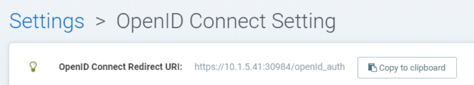
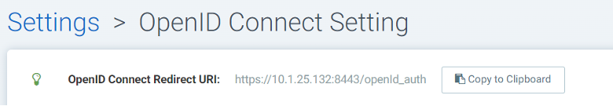
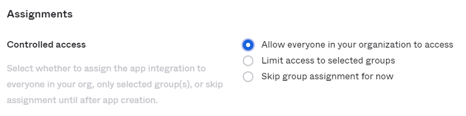
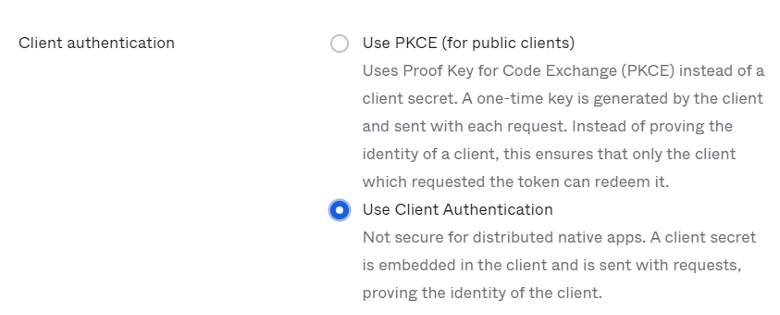

OpenID Connect Azure/Okta
Integração com OpenID Connect (OIDC) para Azure e Okta
Para habilitar a autenticação OpenID Connect, são necessárias as configurações Emissor, ID do Cliente e Segredo do Cliente. Com a URL do emissor, SUSE® Security chamará a API de descoberta para recuperar os endpoints de Autorização, Token e Informações do Usuário.
Localize a URI de Redirecionamento OpenID Connect no topo da SUSE® Security página de Configurações OpenID Connect. Você precisará copiar esta URI para os URIs de redirecionamento de login do Okta e URLs de resposta do Microsoft Azure.

Configuração do Microsoft Azure
No Azure Active Directory > Registros de aplicativos > Nome do aplicativo > Página de Configurações, localize a string do ID do Aplicativo. Isso é usado para definir o ID do Cliente em SUSE® Security. O segredo do Cliente pode ser localizado na configuração de Chaves do Azure.

A URL do Emissor deve ter o formato https://login.microsoftonline.com/{tenantID}/v2.0. Para localizar o tenantID, vá para menu:Azure Active Directory[Página de Propriedades] e encontre o ID do Diretório, substitua-o pelo tenantID na URL.

Se os usuários estiverem atribuídos aos grupos no diretório ativo, a associação ao grupo pode ser adicionada à reivindicação. Encontre o aplicativo em Azure Active Directory → Registros de aplicativos e edite o manifesto. Modifique o valor de "groupMembershipClaims" para "Grupo do Aplicativo". Há um número máximo de grupos que serão emitidos em um token. Se o usuário pertence a um grande número de grupos (> 200) e o valor "Todos" é usado, o token não incluirá os grupos e a autorização falhará. Usar o valor "Grupo do Aplicativo" em vez de "Todos" reduzirá o número de grupos aplicáveis retornados no token.
Por padrão, SUSE® Security procura por "grupos" na reivindicação para identificar a associação do usuário ao grupo. Se outro nome de reivindicação for usado, você pode personalizar o nome da reivindicação na página de Configurações do OpenID Connect de SUSE® Security.
A reivindicação de grupo retornada pelo Azure é identificada pelo "ID do Objeto" em vez do nome. O ID do objeto do grupo pode ser localizado em menu:Azure Active Directory[Grupos> Página do nome do grupo]. Você deve usar este valor para configurar o mapeamento de função baseado em grupo nas Configurações de SUSE® Security →.

Configuração do Okta
Faça login na sua conta do Okta.
No menu à esquerda, clique em “Aplicativos → Aplicativos"` No painel central, clique em "`Create App Integration”:

Um novo painel aparecerá para selecionar o “Sign-in method”:

Selecione a opção “OIDC — OpenID Connect”.
Um painel derivado aparecerá, para seleção de “Application Type”:

Selecione a opção “Native Application”.
O painel central agora mostrará o formulário de Integração Nativa de Aplicativo onde você deve preencher os seguintes valores de acordo:
Para a seção de Configuração Geral:
Fornecimento Nome da Integração: Nome para esta integração. Escolha livremente qualquer nome Tipo de Concessão (marque):
-
Código de Autorização
-
Token de Atualização
-
Senha do Proprietário do Recurso
-
Implícito (híbrido)
Para a seção de URIs de redirecionamento de login:
Vá para seu SUSE® Security console e navegue até “Settings” → “OpenId Connect Settings”. No topo da página, ao lado do rótulo “OpenID Connect Redirect URI”, clique em “Copy to Clipboard”.

Isso copiará a URI de redirecionamento para a memória. Cole-a na caixa de texto correspondente:

Para a seção de Atribuições:
Selecione “Allow everyone in your organization to access” para que esta integração esteja disponível para todos na sua organização.

Em seguida, clique no botão de salvar na parte inferior da página.
Uma vez que suas configurações gerais estejam salvas, você será levado à configuração da nova integração de aplicativo e um ID do cliente será gerado automaticamente.
Na seção “Client Credentials”, clique em editar e modifique a seção “Client Authentication” de “Use PKCE (for public clients)” para “Use Client Authentication”, e clique em salvar. Isso gerará um novo segredo automaticamente que precisaremos nos próximos passos de configuração SUSE® Security:

Navegue até a aba “Sign On” e edite a seção “OpenID Connect ID Token”: Altere o Emissor de “Dynamic (based on request domain)” para o fixo “Okta URL”:

O console do Okta pode operar em dois modos, Modo Clássico e Modo Desenvolvedor. No modo clássico, a URL do emissor está localizada na aba de Acesso da página do Aplicativo Okta. Para que a associação do grupo do usuário seja retornada na reivindicação, você precisa adicionar o escopo "groups" na SUSE® Security página de configuração OpenID Connect:

No Modo Desenvolvedor, o Okta permite que você personalize as reivindicações. Isso é feito na página da API gerenciando Servidores de Autorização (navegue até o menu à esquerda → Segurança → API). A URL do emissor está localizada na aba Configurações de cada servidor de autorização:

As reivindicações são pares nome/valor que contêm informações sobre um usuário, bem como metainformações sobre o serviço OIDC. Na seção “OpenID Connect ID Token”, você pode criar novas reivindicações para os grupos do usuário e incluir a reivindicação no token de ID (um token de ID é um JSON Web Token, um meio compacto e seguro de representar reivindicações a serem transferidas entre duas partes, de forma que as informações de identidade sobre o usuário sejam codificadas diretamente no token e o token possa ser verificado de forma definitiva para provar que não foi adulterado). Se um escopo específico estiver configurado, certifique-se de adicionar o escopo na SUSE® Security página de configuração OpenID Connect, para que a reivindicação possa ser incluída após a autenticação do usuário:

Por padrão, SUSE® Security procura por "grupos" na reivindicação para identificar a associação do usuário ao grupo. Se outro nome de reivindicação for usado, você pode personalizar o nome da reivindicação na página de Configurações do OpenID Connect de SUSE® Security. Para configurar reivindicações, edite a seção “OpenID Connect ID Token” conforme mostrado na próxima imagem:

Na página de integração do seu aplicativo, navegue até a aba “Assignments” e certifique-se de que você tenha as atribuições correspondentes listadas:

SUSE® Security Configuração OpenID Connect
Configure a URL do Emissor, ID do Cliente e segredo do Cliente adequados na página.

Após a autenticação do usuário, o papel adequado pode ser derivado com a configuração de mapeamento de papéis baseado em grupos. Para configurar o mapeamento de papéis baseado em grupos,
-
Se o mapeamento de papéis baseado em grupos não estiver configurado ou os grupos correspondentes não puderem ser localizados, o usuário autenticado será atribuído ao papel Padrão. Se o papel Padrão estiver definido como Nenhum, quando o mapeamento de papéis baseado em grupos falhar, o usuário não conseguirá fazer login.
-
Especifique uma lista de grupos respectivamente no mapeamento de papéis de Administrador e Leitor. A associação do grupo do usuário é retornada pelas reivindicações no Token de ID após a autenticação do usuário. Se o grupo correspondente for localizado, o papel correspondente será atribuído ao usuário.
O grupo pode ser mapeado para o papel de Administrador em SUSE® Security. Usuários individuais podem ser 'promovidos' a um papel de Administrador Federado fazendo login como um administrador do cluster local, selecionando o usuário com o Provedor de Identidade 'OpenID' e editando seu papel nas Configurações → Usuários/Papéis.
Mapeamento de Grupos para Papéis e Namespaces
Consulte a seção Usuários e Papéis para saber como mapear grupos para papéis predefinidos e personalizados, bem como namespaces em SUSE® Security.